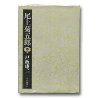

音羽屋をより深く知るための本
音羽屋をより深く知るための本 > 『尾上菊五郎』
戸板康二『尾上菊五郎』
（毎日新聞社 昭和48年）活写する筆によって六代目の魅力が描かれる
尾上菊五郎家代々の評伝ですが、半分以上のページが六代目菊五郎に割かれています。戸板康二らしい洒脱な文体で、六代目の魅力たっぷりの描かれた一冊です。
なんといってもほほえましいのは、市村座時代にライバルと評された吉右衛門との交友です。六代目菊五郎が吉右衛門に対して抱いていた競争心は、「名門の子だからといって、いい気になっていると、吉右衛門のような人に追い越されてしまう」という言葉で語られます。著者の戸板も述べているように、この発言は、家柄のない吉右衛門を見下したものではなく、吉右衛門が皆に「うまい」と言われることをつまらなく思った六代目のひねくれでしょう。一方の吉右衛門は、傲慢な菊五郎の態度に「呆れるばかり」で「一座するのがつくづく嫌になった」との談話を残す一方で、『熊谷陣屋』の義経で弥陀六を呼び止めるセリフに「恐れ入った」と言い、『寺子屋』については「六代目が松王だと私の源蔵と誠にあすこはイキがよく合ひます」と語ります。「六代目と吉右衛門」と題されたこの章は、菊五郎の死後、菊五郎と吉右衛門が頬をくつけあって撮った「仲よし」の写真を、吉右衛門が懐かしく眺める描写で締めくくられます。ほほえましいと共に、ライバルを失った吉右衛門の寂しさを、読者も共有できる描写です。後年、直木賞作家となった戸板の写生する文章力がこの本でも生きています。
本書では、六代目襲名、青年期、市村座時代、関東大震災、松竹との契約、敗戦、戦後と、六代目の人生が、それぞれの時代に演じた役と、エピソードや芸談によって綴られていきます。戸板自身が同時代を生きたこと、七代目梅幸と同窓だったこともあり、自身が接した六代目の思い出を語っていることが、本書を魅力ある一冊に仕上げているといえるでしょう。六代目の突拍子もない発言を集めた「六代目の名言」はたまらなく愉快で笑いを誘います。
Copyright © Otowaya All Rights Reserved.